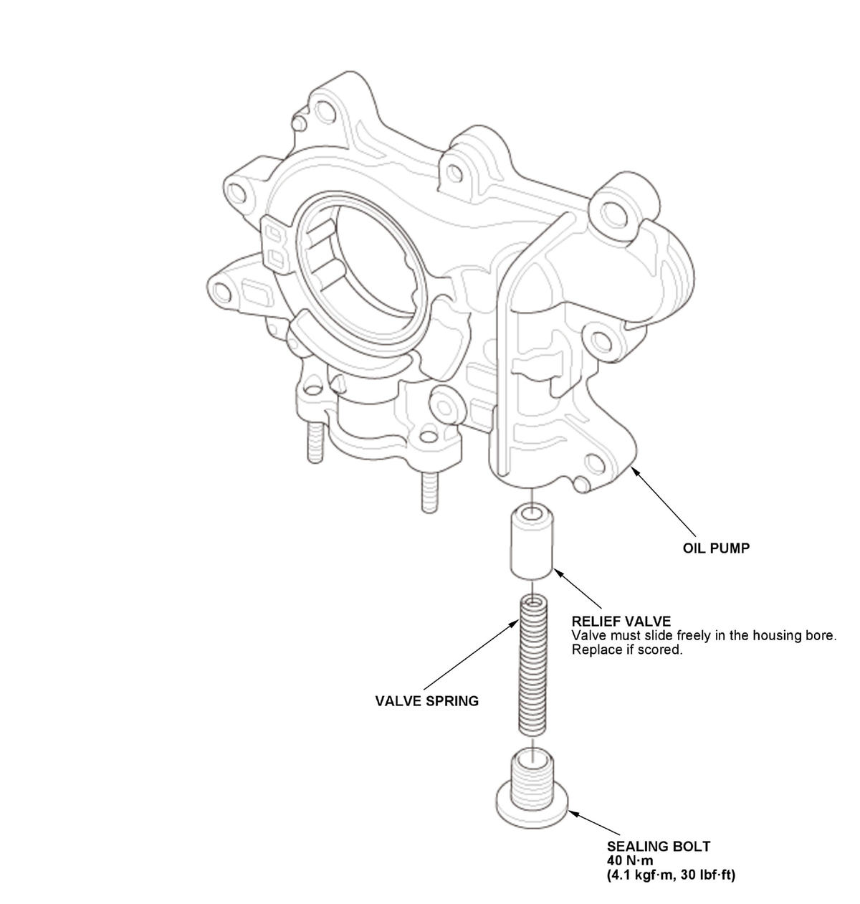

LEMON Manuals
: Even more car manuals for everyone: 1960-2025
Home
>>
Honda
>>
2016
>>
Civic LX, 4D Sedan, Automatic CVT Trans
>>
Repair and Diagnosis
>>
Engine Mechanical
>>
Lubrication System
>>
Lubrication System - Service Information
>>
Overhaul
>>
Engine Oil Pump Overhaul (1.5L Engine)
>>
Exploded View
Exploded View
NOTE:
Do not disassemble the oil pump except for the shown parts.
Oil Pump
Fig 1: Exploded View Of Engine Oil Pump Overhaul Components With Torque Specifications (1.5L Engine)

Courtesy of HONDA, U.S.A., INC.